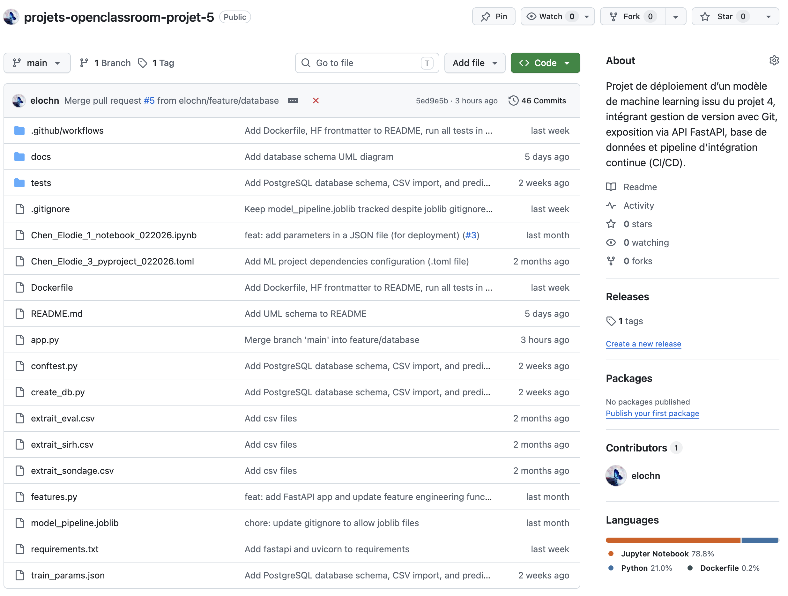
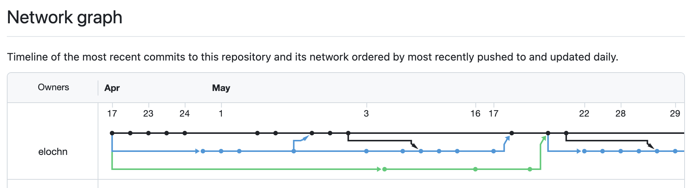
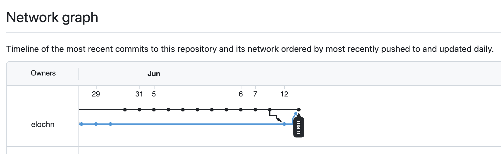
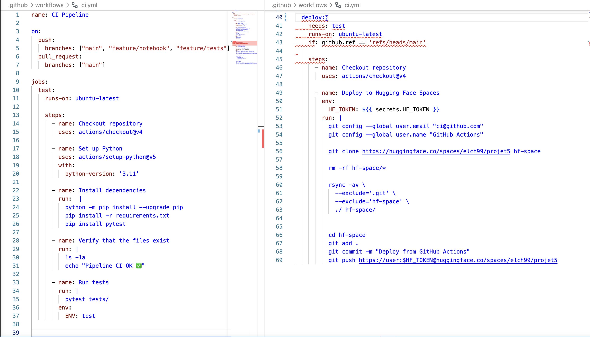
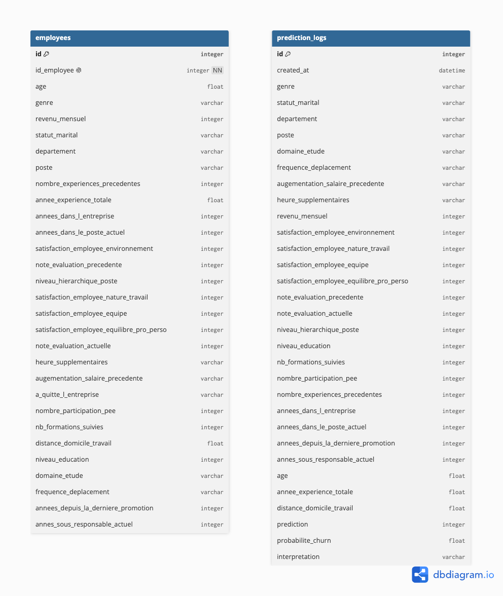

Mission Futurisys — Projet 5
Elodie Chen
Futurisys souhaite anticiper les départs volontaires de ses employés pour réduire les coûts de recrutement et de formation.
Un modèle LightGBM a été entraîné sur des données RH (SIRH, évaluations, sondage de satisfaction).
Mettre ce modèle en production :

projet5/ ├── docs/ │ └── schema_bdd.png ├── tests/ │ ├── test_db.py │ └── test_model.py ├── app.py ├── create_db.py ├── features.py ├── Dockerfile ├── requirements.txt ├── train_params.json ├── model_pipeline.joblib └── README.md
main — productionfeature/api · feature/databasefeature/tests · feature/notebookfeature/readme


mainpytest tests/HF_TOKEN (secret GitHub chiffré)HF_TOKEN — stocké dans les secrets GitHubDATABASE_URL — variable d'environnementGET / — vérification que l'API tournePOST /predict — prédiction du risque de churnValide automatiquement les 27 variables d'entrée avant toute prédiction.
{
"prediction": 1,
"probabilite_churn": 0.847,
"interpretation": "Risque de churn"
}
https://elch99-projet5.hf.space/docs

/predict est enregistré avec les 27 inputs, la prédiction, la probabilité et l'horodatageDATABASE_URL jamais écrite dans le codecreated_attests passés
create_db.py
couverture totale
.venv/bin/pytest tests/ --cov=. --cov-report=term
v1.0